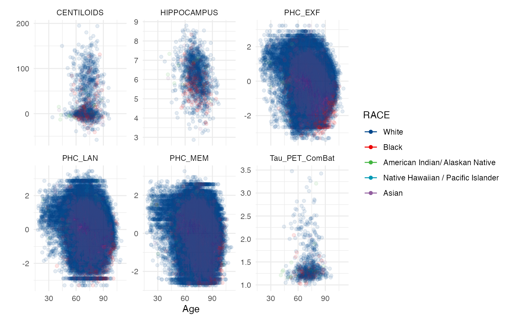
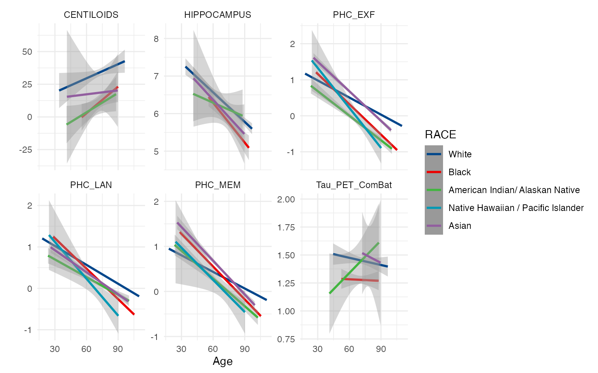

The Consortium for Clarity in ADRD Research Through Imaging (CLARiTI) (Mormino et al. 2025) leverages existing ADRC infrastructure to integrate standardized imaging and plasma collection to characterize mixed pathologies and use community-engaged research methods to ensure that ≥ 25% of the sample is from underrepresented populations (e.g., ethnoculturally minoritized, low education).
The code below demonstrates how to use data in the
CLARITI package and R Core Team
(2024) to derive some basic summaries.
Organize data
# For hippocampus volume from SCAN
dd <- investigator_scan_mrisbm_nacc66 %>%
select(NACCID, DATE = SCANDT, HIPPOCAMPUS, ICV = CEREBRUMTCV) %>%
full_join(investigator_scan_taupetnpdka_nacc66 %>%
select(NACCID, DATE = SCANDATE, Tau_PET = META_TEMPORAL_SUVR, TRACER) %>%
mutate(TRACER = case_when(
TRACER == 1 ~ 'FDG',
TRACER == 2 ~ 'PIB',
TRACER == 3 ~ 'Florbetapir',
TRACER == 4 ~ 'Florbetaben',
TRACER == 5 ~ 'NAV4694',
TRACER == 6 ~ 'Flortaucipir',
TRACER == 7 ~ 'MK6240',
TRACER == 8 ~ 'PI2620',
TRACER == 9 ~ 'GTP1',
TRACER == 99 ~ 'Unknown') %>% as.factor()) %>%
rename(Tau_TRACER = TRACER),
by = c('NACCID', 'DATE')) %>%
full_join(investigator_scan_amyloidpetgaain_nacc66 %>%
select(NACCID, DATE = SCANDATE, AMYLOID_STATUS, CENTILOIDS, TRACER) %>%
mutate(TRACER = case_when(
TRACER == 1 ~ 'FDG',
TRACER == 2 ~ 'PIB',
TRACER == 3 ~ 'Florbetapir',
TRACER == 4 ~ 'Florbetaben',
TRACER == 5 ~ 'NAV4694',
TRACER == 6 ~ 'Flortaucipir',
TRACER == 7 ~ 'MK6240',
TRACER == 8 ~ 'PI2620',
TRACER == 9 ~ 'GTP1',
TRACER == 99 ~ 'Unknown') %>% as.factor()) %>%
rename(Amyloid_TRACER = TRACER),
by = c('NACCID', 'DATE')) %>%
full_join(NACC_ADSP_PHC_Cognition_2024 %>%
select(NACCID, NACCVNUM, PHC_MEM, PHC_EXF, PHC_LAN) %>%
left_join(investigator_ftldlbd_nacc66 %>%
mutate(DATE = as.Date(paste(VISITYR, VISITMO, VISITDAY, sep='-'))) %>%
select(NACCID, NACCVNUM, DATE),
by = c('NACCID', 'NACCVNUM')),
by = c('NACCID', 'DATE')) %>%
left_join(investigator_ftldlbd_nacc66 %>%
mutate(BIRTHDATE = as.Date(paste(BIRTHYR, BIRTHMO, 15, sep = '-'))) %>%
filter(!is.na(BIRTHDATE)) %>%
arrange(NACCID, NACCVNUM) %>%
select(NACCID, BIRTHDATE, RACE, SEX, EDUC, HISPANIC) %>%
group_by(NACCID) %>%
fill(.direction = "updown") %>%
ungroup() %>%
filter(!duplicated(NACCID)),
by = 'NACCID') %>%
mutate(Age = as.numeric(DATE - BIRTHDATE)/365.25) %>%
group_by(NACCID) %>%
mutate(ICV = mean(ICV, na.rm = TRUE)) %>%
ungroup() %>%
arrange(NACCID, DATE)
dd_cross <- dd %>%
group_by(NACCID) %>%
fill(everything(), .direction = "updown") %>%
filter(!duplicated(NACCID)) %>%
mutate(
SEX = case_when(is.na(SEX) ~ " Missing", TRUE ~ SEX) %>%
factor(levels = c(" Male", "Female", " Missing"))
) %>%
ungroup()
# harmonize tau PET data ----
tmp <- dd %>% filter(!is.na(Tau_PET) & !is.na(Age))
tau_PET_fit <- lme(Tau_PET ~ Tau_TRACER + SEX + Age, data = tmp,
random = ~ 1 | NACCID,
weights = varIdent(form = ~ 1 | Tau_TRACER))
tmp$Tau_PET_ComBat <- ComBat(Tau_PET ~ Tau_TRACER + SEX + Age, data = tmp,
random1 = ~ 1 | NACCID, random2 = NULL,
weights = varIdent(form = ~ 1 | Tau_TRACER))
dd <- dd %>%
left_join(tmp %>% select(NACCID, DATE, Tau_PET_ComBat),
by = c('NACCID', 'DATE'))Baseline characteristics tables
mylabels = list(
PHC_MEM = 'Harmonized Memory',
PHC_EXF = 'Harmonized Exec Function',
PHC_LAN = 'Harmonized Language',
EDUC = 'Education (yrs)',
Age = 'Age (yrs)')All CLARiTI participants
tableby(SEX ~ Age + RACE + HISPANIC +
AMYLOID_STATUS + CENTILOIDS +
HIPPOCAMPUS + Tau_PET + Tau_TRACER +
PHC_MEM + PHC_EXF + PHC_LAN + EDUC,
data = dd_cross %>% filter(SEX != ' Missing')) %>%
summary(labelTranslations = mylabels, digits = 1)| Male (N=21115) | Female (N=28294) | Total (N=49409) | p value | |
|---|---|---|---|---|
| Age (yrs) | < 0.001 | |||
| Mean (SD) | 71.8 (10.3) | 71.5 (10.4) | 71.6 (10.4) | |
| Range | 19.7 - 104.1 | 18.0 - 109.9 | 18.0 - 109.9 | |
| RACE | ||||
| N-Miss | 412 | 782 | 1194 | |
| White | 17977 (86.8%) | 21229 (77.2%) | 39206 (81.3%) | |
| Black | 2051 (9.9%) | 5221 (19.0%) | 7272 (15.1%) | |
| American Indian/ Alaskan Native | 158 (0.8%) | 298 (1.1%) | 456 (0.9%) | |
| Native Hawaiian / Pacific Islander | 21 (0.1%) | 33 (0.1%) | 54 (0.1%) | |
| Asian | 496 (2.4%) | 731 (2.7%) | 1227 (2.5%) | |
| Multiracial | 0 (0.0%) | 0 (0.0%) | 0 (0.0%) | |
| Other | 0 (0.0%) | 0 (0.0%) | 0 (0.0%) | |
| Missing/Unknown | 0 (0.0%) | 0 (0.0%) | 0 (0.0%) | |
| HISPANIC | ||||
| No | 19566 (92.7%) | 25308 (89.4%) | 44874 (90.8%) | |
| Yes | 1468 (7.0%) | 2869 (10.1%) | 4337 (8.8%) | |
| Unknown/Other | 81 (0.4%) | 117 (0.4%) | 198 (0.4%) | |
| Missing/Not Assessed/Not Available | 0 (0.0%) | 0 (0.0%) | 0 (0.0%) | |
| AMYLOID_STATUS | 0.015 | |||
| N-Miss | 20612 | 27587 | 48199 | |
| Mean (SD) | 0.5 (0.5) | 0.4 (0.5) | 0.5 (0.5) | |
| Range | 0.0 - 1.0 | 0.0 - 1.0 | 0.0 - 1.0 | |
| CENTILOIDS | < 0.001 | |||
| N-Miss | 20612 | 27587 | 48199 | |
| Mean (SD) | 33.9 (46.6) | 25.2 (42.4) | 28.8 (44.3) | |
| Range | -48.0 - 195.0 | -58.0 - 194.0 | -58.0 - 195.0 | |
| HIPPOCAMPUS | < 0.001 | |||
| N-Miss | 20509 | 27438 | 47947 | |
| Mean (SD) | 6.5 (0.9) | 6.0 (0.8) | 6.2 (0.9) | |
| Range | 3.3 - 8.8 | 2.9 - 8.3 | 2.9 - 8.8 | |
| Tau_PET | 0.845 | |||
| N-Miss | 20793 | 27857 | 48650 | |
| Mean (SD) | 1.4 (0.4) | 1.4 (0.4) | 1.4 (0.4) | |
| Range | 0.9 - 3.0 | 0.9 - 3.5 | 0.9 - 3.5 | |
| Tau_TRACER | 0.003 | |||
| N-Miss | 20793 | 27857 | 48650 | |
| Flortaucipir | 230 (71.4%) | 266 (60.9%) | 496 (65.3%) | |
| MK6240 | 92 (28.6%) | 171 (39.1%) | 263 (34.7%) | |
| Harmonized Memory | < 0.001 | |||
| N-Miss | 68 | 110 | 178 | |
| Mean (SD) | -0.0 (0.9) | 0.1 (1.0) | 0.1 (0.9) | |
| Range | -2.7 - 2.7 | -2.7 - 2.7 | -2.7 - 2.7 | |
| Harmonized Exec Function | < 0.001 | |||
| N-Miss | 467 | 650 | 1117 | |
| Mean (SD) | 0.0 (0.9) | 0.1 (0.9) | 0.1 (0.9) | |
| Range | -3.3 - 3.2 | -3.3 - 3.2 | -3.3 - 3.2 | |
| Harmonized Language | < 0.001 | |||
| N-Miss | 453 | 637 | 1090 | |
| Mean (SD) | 0.1 (0.8) | 0.3 (0.9) | 0.2 (0.9) | |
| Range | -2.9 - 3.0 | -3.3 - 3.3 | -3.3 - 3.3 | |
| Education (yrs) | < 0.001 | |||
| Mean (SD) | 16.4 (7.6) | 15.4 (7.6) | 15.8 (7.6) | |
| Range | 0.0 - 99.0 | 0.0 - 99.0 | 0.0 - 99.0 |
CLARiTI participants with hippocampal volumes
tableby(SEX ~ Age + RACE + HISPANIC +
AMYLOID_STATUS + CENTILOIDS +
HIPPOCAMPUS + Tau_PET + Tau_TRACER +
PHC_MEM + PHC_EXF + PHC_LAN + EDUC,
data = dd_cross %>% filter(!is.na(HIPPOCAMPUS) & SEX != ' Missing')) %>%
summary(labelTranslations = mylabels, digits = 1)| Male (N=606) | Female (N=856) | Total (N=1462) | p value | |
|---|---|---|---|---|
| Age (yrs) | 0.020 | |||
| Mean (SD) | 69.0 (7.9) | 68.0 (8.2) | 68.4 (8.1) | |
| Range | 36.4 - 91.7 | 33.7 - 92.1 | 33.7 - 92.1 | |
| RACE | ||||
| N-Miss | 7 | 12 | 19 | |
| White | 537 (89.6%) | 669 (79.3%) | 1206 (83.6%) | |
| Black | 46 (7.7%) | 145 (17.2%) | 191 (13.2%) | |
| American Indian/ Alaskan Native | 5 (0.8%) | 12 (1.4%) | 17 (1.2%) | |
| Native Hawaiian / Pacific Islander | 0 (0.0%) | 0 (0.0%) | 0 (0.0%) | |
| Asian | 11 (1.8%) | 18 (2.1%) | 29 (2.0%) | |
| Multiracial | 0 (0.0%) | 0 (0.0%) | 0 (0.0%) | |
| Other | 0 (0.0%) | 0 (0.0%) | 0 (0.0%) | |
| Missing/Unknown | 0 (0.0%) | 0 (0.0%) | 0 (0.0%) | |
| HISPANIC | ||||
| No | 569 (93.9%) | 795 (92.9%) | 1364 (93.3%) | |
| Yes | 33 (5.4%) | 55 (6.4%) | 88 (6.0%) | |
| Unknown/Other | 4 (0.7%) | 6 (0.7%) | 10 (0.7%) | |
| Missing/Not Assessed/Not Available | 0 (0.0%) | 0 (0.0%) | 0 (0.0%) | |
| AMYLOID_STATUS | 0.206 | |||
| N-Miss | 363 | 542 | 905 | |
| Mean (SD) | 0.5 (0.5) | 0.5 (0.5) | 0.5 (0.5) | |
| Range | 0.0 - 1.0 | 0.0 - 1.0 | 0.0 - 1.0 | |
| CENTILOIDS | 0.062 | |||
| N-Miss | 363 | 542 | 905 | |
| Mean (SD) | 37.7 (46.3) | 30.4 (44.3) | 33.6 (45.3) | |
| Range | -17.0 - 153.0 | -34.0 - 194.0 | -34.0 - 194.0 | |
| HIPPOCAMPUS | < 0.001 | |||
| Mean (SD) | 6.5 (0.9) | 6.0 (0.8) | 6.2 (0.9) | |
| Range | 3.3 - 8.8 | 2.9 - 8.3 | 2.9 - 8.8 | |
| Tau_PET | 0.794 | |||
| N-Miss | 450 | 650 | 1100 | |
| Mean (SD) | 1.4 (0.4) | 1.4 (0.4) | 1.4 (0.4) | |
| Range | 0.9 - 3.0 | 0.9 - 3.3 | 0.9 - 3.3 | |
| Tau_TRACER | 0.171 | |||
| N-Miss | 450 | 650 | 1100 | |
| Flortaucipir | 107 (68.6%) | 127 (61.7%) | 234 (64.6%) | |
| MK6240 | 49 (31.4%) | 79 (38.3%) | 128 (35.4%) | |
| Harmonized Memory | < 0.001 | |||
| N-Miss | 4 | 3 | 7 | |
| Mean (SD) | 0.5 (0.7) | 0.6 (0.8) | 0.6 (0.7) | |
| Range | -1.9 - 2.4 | -2.3 - 2.6 | -2.3 - 2.6 | |
| Harmonized Exec Function | 0.758 | |||
| N-Miss | 4 | 3 | 7 | |
| Mean (SD) | 0.4 (0.8) | 0.5 (0.9) | 0.5 (0.8) | |
| Range | -3.0 - 2.7 | -3.3 - 2.9 | -3.3 - 2.9 | |
| Harmonized Language | 0.027 | |||
| N-Miss | 4 | 3 | 7 | |
| Mean (SD) | 0.6 (0.7) | 0.7 (0.8) | 0.7 (0.7) | |
| Range | -2.0 - 2.3 | -2.7 - 3.1 | -2.7 - 3.1 | |
| Education (yrs) | < 0.001 | |||
| Mean (SD) | 16.9 (5.4) | 16.0 (2.7) | 16.4 (4.1) | |
| Range | 0.0 - 99.0 | 0.0 - 25.0 | 0.0 - 99.0 |
CLARiTI participants with tau PET
tableby(SEX ~ Age + RACE + HISPANIC +
AMYLOID_STATUS + CENTILOIDS +
HIPPOCAMPUS + Tau_PET + Tau_TRACER +
PHC_MEM + PHC_EXF + PHC_LAN + EDUC,
data = dd_cross %>% filter(!is.na(Tau_PET) & SEX != ' Missing')) %>%
summary(labelTranslations = mylabels, digits = 1)| Male (N=322) | Female (N=437) | Total (N=759) | p value | |
|---|---|---|---|---|
| Age (yrs) | 0.014 | |||
| Mean (SD) | 68.4 (9.1) | 66.7 (8.7) | 67.4 (8.9) | |
| Range | 32.5 - 92.2 | 41.1 - 87.6 | 32.5 - 92.2 | |
| RACE | ||||
| N-Miss | 2 | 2 | 4 | |
| White | 295 (92.2%) | 353 (81.1%) | 648 (85.8%) | |
| Black | 15 (4.7%) | 60 (13.8%) | 75 (9.9%) | |
| American Indian/ Alaskan Native | 5 (1.6%) | 18 (4.1%) | 23 (3.0%) | |
| Native Hawaiian / Pacific Islander | 1 (0.3%) | 0 (0.0%) | 1 (0.1%) | |
| Asian | 4 (1.2%) | 4 (0.9%) | 8 (1.1%) | |
| Multiracial | 0 (0.0%) | 0 (0.0%) | 0 (0.0%) | |
| Other | 0 (0.0%) | 0 (0.0%) | 0 (0.0%) | |
| Missing/Unknown | 0 (0.0%) | 0 (0.0%) | 0 (0.0%) | |
| HISPANIC | ||||
| No | 304 (94.4%) | 408 (93.4%) | 712 (93.8%) | |
| Yes | 17 (5.3%) | 26 (5.9%) | 43 (5.7%) | |
| Unknown/Other | 1 (0.3%) | 3 (0.7%) | 4 (0.5%) | |
| Missing/Not Assessed/Not Available | 0 (0.0%) | 0 (0.0%) | 0 (0.0%) | |
| AMYLOID_STATUS | 0.450 | |||
| N-Miss | 50 | 71 | 121 | |
| Mean (SD) | 0.5 (0.5) | 0.5 (0.5) | 0.5 (0.5) | |
| Range | 0.0 - 1.0 | 0.0 - 1.0 | 0.0 - 1.0 | |
| CENTILOIDS | 0.127 | |||
| N-Miss | 50 | 71 | 121 | |
| Mean (SD) | 36.8 (46.2) | 31.4 (43.3) | 33.7 (44.6) | |
| Range | -35.0 - 195.0 | -58.0 - 172.0 | -58.0 - 195.0 | |
| HIPPOCAMPUS | < 0.001 | |||
| N-Miss | 166 | 231 | 397 | |
| Mean (SD) | 6.3 (1.0) | 6.0 (0.8) | 6.1 (0.9) | |
| Range | 3.3 - 8.5 | 3.4 - 8.3 | 3.3 - 8.5 | |
| Tau_PET | 0.845 | |||
| Mean (SD) | 1.4 (0.4) | 1.4 (0.4) | 1.4 (0.4) | |
| Range | 0.9 - 3.0 | 0.9 - 3.5 | 0.9 - 3.5 | |
| Tau_TRACER | 0.003 | |||
| Flortaucipir | 230 (71.4%) | 266 (60.9%) | 496 (65.3%) | |
| MK6240 | 92 (28.6%) | 171 (39.1%) | 263 (34.7%) | |
| Harmonized Memory | 0.002 | |||
| N-Miss | 6 | 6 | 12 | |
| Mean (SD) | 0.4 (0.7) | 0.6 (0.8) | 0.5 (0.7) | |
| Range | -1.4 - 2.2 | -2.6 - 2.6 | -2.6 - 2.6 | |
| Harmonized Exec Function | 0.852 | |||
| N-Miss | 5 | 5 | 10 | |
| Mean (SD) | 0.4 (0.8) | 0.4 (0.9) | 0.4 (0.8) | |
| Range | -2.6 - 2.7 | -3.2 - 2.7 | -3.2 - 2.7 | |
| Harmonized Language | 0.029 | |||
| N-Miss | 5 | 5 | 10 | |
| Mean (SD) | 0.5 (0.7) | 0.6 (0.8) | 0.6 (0.7) | |
| Range | -1.8 - 2.5 | -2.3 - 2.9 | -2.3 - 2.9 | |
| Education (yrs) | < 0.001 | |||
| Mean (SD) | 16.7 (2.5) | 16.0 (2.5) | 16.3 (2.5) | |
| Range | 8.0 - 20.0 | 8.0 - 21.0 | 8.0 - 21.0 |
CLARiTI participants with amyloid PET
tableby(SEX ~ Age + RACE + HISPANIC +
AMYLOID_STATUS + CENTILOIDS +
HIPPOCAMPUS + Tau_PET + Tau_TRACER +
PHC_MEM + PHC_EXF + PHC_LAN + EDUC,
data = dd_cross %>% filter(!is.na(CENTILOIDS) & SEX != ' Missing')) %>%
summary(labelTranslations = mylabels, digits = 1)| Male (N=503) | Female (N=707) | Total (N=1210) | p value | |
|---|---|---|---|---|
| Age (yrs) | 0.002 | |||
| Mean (SD) | 69.2 (8.2) | 67.7 (8.2) | 68.3 (8.2) | |
| Range | 33.9 - 92.2 | 41.1 - 92.1 | 33.9 - 92.2 | |
| RACE | ||||
| N-Miss | 4 | 5 | 9 | |
| White | 437 (87.6%) | 530 (75.5%) | 967 (80.5%) | |
| Black | 43 (8.6%) | 130 (18.5%) | 173 (14.4%) | |
| American Indian/ Alaskan Native | 6 (1.2%) | 18 (2.6%) | 24 (2.0%) | |
| Native Hawaiian / Pacific Islander | 1 (0.2%) | 0 (0.0%) | 1 (0.1%) | |
| Asian | 12 (2.4%) | 24 (3.4%) | 36 (3.0%) | |
| Multiracial | 0 (0.0%) | 0 (0.0%) | 0 (0.0%) | |
| Other | 0 (0.0%) | 0 (0.0%) | 0 (0.0%) | |
| Missing/Unknown | 0 (0.0%) | 0 (0.0%) | 0 (0.0%) | |
| HISPANIC | ||||
| No | 470 (93.4%) | 659 (93.2%) | 1129 (93.3%) | |
| Yes | 29 (5.8%) | 44 (6.2%) | 73 (6.0%) | |
| Unknown/Other | 4 (0.8%) | 4 (0.6%) | 8 (0.7%) | |
| Missing/Not Assessed/Not Available | 0 (0.0%) | 0 (0.0%) | 0 (0.0%) | |
| AMYLOID_STATUS | 0.015 | |||
| Mean (SD) | 0.5 (0.5) | 0.4 (0.5) | 0.5 (0.5) | |
| Range | 0.0 - 1.0 | 0.0 - 1.0 | 0.0 - 1.0 | |
| CENTILOIDS | < 0.001 | |||
| Mean (SD) | 33.9 (46.6) | 25.2 (42.4) | 28.8 (44.3) | |
| Range | -48.0 - 195.0 | -58.0 - 194.0 | -58.0 - 195.0 | |
| HIPPOCAMPUS | < 0.001 | |||
| N-Miss | 260 | 393 | 653 | |
| Mean (SD) | 6.4 (1.0) | 6.0 (0.8) | 6.1 (0.9) | |
| Range | 3.3 - 8.5 | 3.4 - 8.3 | 3.3 - 8.5 | |
| Tau_PET | 0.920 | |||
| N-Miss | 231 | 341 | 572 | |
| Mean (SD) | 1.4 (0.4) | 1.4 (0.4) | 1.4 (0.4) | |
| Range | 0.9 - 3.0 | 0.9 - 3.5 | 0.9 - 3.5 | |
| Tau_TRACER | 0.013 | |||
| N-Miss | 231 | 341 | 572 | |
| Flortaucipir | 188 (69.1%) | 218 (59.6%) | 406 (63.6%) | |
| MK6240 | 84 (30.9%) | 148 (40.4%) | 232 (36.4%) | |
| Harmonized Memory | < 0.001 | |||
| N-Miss | 8 | 7 | 15 | |
| Mean (SD) | 0.4 (0.7) | 0.6 (0.8) | 0.5 (0.7) | |
| Range | -1.9 - 2.3 | -2.6 - 2.6 | -2.6 - 2.6 | |
| Harmonized Exec Function | 0.072 | |||
| N-Miss | 7 | 6 | 13 | |
| Mean (SD) | 0.4 (0.9) | 0.5 (0.8) | 0.4 (0.8) | |
| Range | -2.6 - 2.9 | -3.2 - 2.7 | -3.2 - 2.9 | |
| Harmonized Language | < 0.001 | |||
| N-Miss | 7 | 6 | 13 | |
| Mean (SD) | 0.5 (0.7) | 0.7 (0.8) | 0.6 (0.7) | |
| Range | -1.9 - 2.9 | -2.3 - 2.9 | -2.3 - 2.9 | |
| Education (yrs) | < 0.001 | |||
| Mean (SD) | 17.0 (4.4) | 16.1 (2.5) | 16.5 (3.5) | |
| Range | 8.0 - 99.0 | 4.0 - 21.0 | 4.0 - 99.0 |
Summary plots
dd %>%
select(NACCID, Age, RACE, HIPPOCAMPUS, Tau_PET_ComBat, CENTILOIDS,
PHC_MEM, PHC_EXF, PHC_LAN) %>%
pivot_longer(HIPPOCAMPUS:PHC_LAN) %>%
filter(!is.na(value) & !is.na(RACE)) %>%
ggplot(aes(x=Age, y=value, color=RACE)) +
geom_point(alpha=0.1) +
geom_line(aes(group = NACCID), alpha=0.01) +
facet_wrap(vars(name), scales = 'free_y') +
guides(colour = guide_legend(override.aes = list(alpha=1))) +
ylab('')

Spaghetti of selected outcomes by age and race
dd %>%
select(NACCID, Age, RACE, HIPPOCAMPUS, Tau_PET_ComBat, CENTILOIDS,
PHC_MEM, PHC_EXF, PHC_LAN) %>%
pivot_longer(HIPPOCAMPUS:PHC_LAN) %>%
filter(!is.na(value) & !is.na(RACE)) %>%
ggplot(aes(x=Age, y=value, color=RACE)) +
geom_smooth(method = 'lm') +
# geom_smooth(method = 'gam', formula = y ~ s(x, bs = "cs", fx = TRUE, k = 1)) +
facet_wrap(vars(name), scales = 'free_y') +
guides(colour = guide_legend(override.aes = list(alpha=1))) +
ylab('')
#> `geom_smooth()` using formula = 'y ~ x'

Linear trends of selected outcomes by age and race
ComBat Harmonization of tau PET (tracers)
summary(tau_PET_fit)
#> Linear mixed-effects model fit by REML
#> Data: tmp
#> AIC BIC logLik
#> 617 649 -301
#>
#> Random effects:
#> Formula: ~1 | NACCID
#> (Intercept) Residual
#> StdDev: 0.38 0.043
#>
#> Variance function:
#> Structure: Different standard deviations per stratum
#> Formula: ~1 | Tau_TRACER
#> Parameter estimates:
#> Flortaucipir MK6240
#> 1.0 1.7
#> Fixed effects: Tau_PET ~ Tau_TRACER + SEX + Age
#> Value Std.Error DF t-value p-value
#> (Intercept) 1.39 0.114 757 12.2 0.00
#> Tau_TRACERMK6240 -0.17 0.028 52 -5.9 0.00
#> SEXFemale 0.02 0.029 757 0.8 0.42
#> Age 0.00 0.002 52 0.3 0.79
#> Correlation:
#> (Intr) T_TRAC SEXFml
#> Tau_TRACERMK6240 -0.157
#> SEXFemale -0.185 -0.099
#> Age -0.979 0.090 0.051
#>
#> Standardized Within-Group Residuals:
#> Min Q1 Med Q3 Max
#> -2.150 -0.077 -0.047 0.022 2.350
#>
#> Number of Observations: 813
#> Number of Groups: 759
ggplot(dd %>% filter(!is.na(Tau_PET_ComBat)),
aes(x = Tau_PET, y = Tau_PET_ComBat, color = Tau_TRACER)) +
geom_point() +
geom_abline(intercept = 0, slope = 1, linetype = 'dashed')
References
Mormino, Elizabeth C, Sarah A Biber, Annalise Rahman-Filipiak,
Konstantinos Arfanakis, Lindsay Clark, Jeffrey L Dage, John A Detre, et
al. 2025. “The Consortium for Clarity in ADRD Research Through
Imaging (CLARiTI).” Alzheimer’s & Dementia 21 (1):
e14383.
R Core Team. 2024. R: A Language and Environment for Statistical
Computing. Vienna, Austria: R Foundation for Statistical Computing.
https://www.R-project.org/.